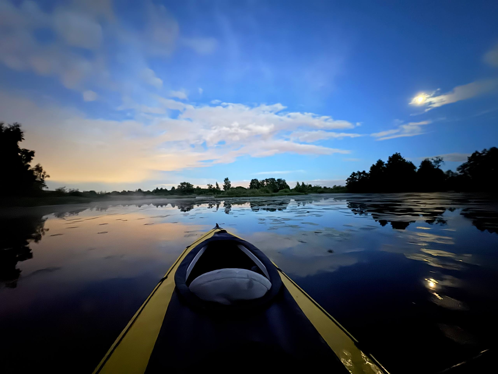
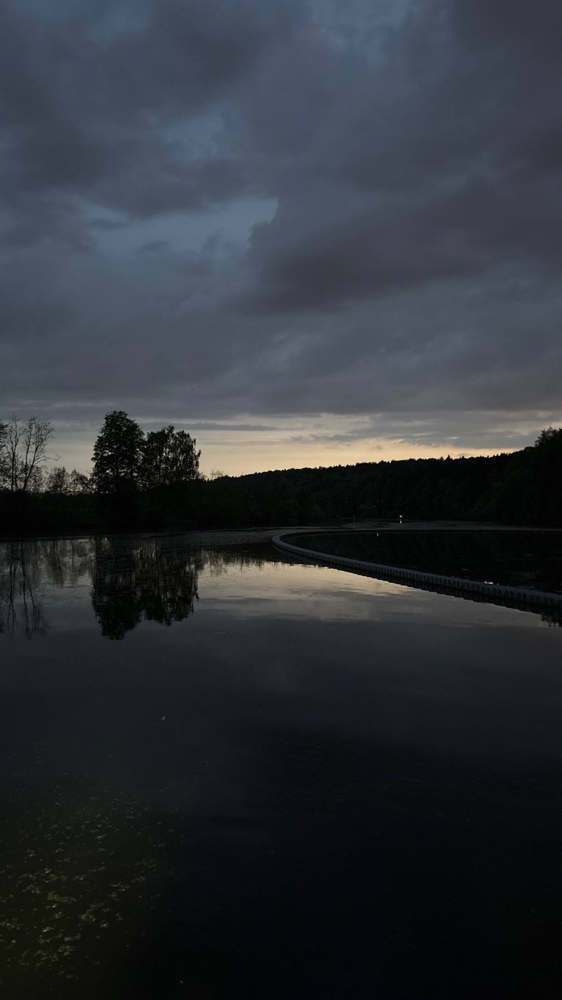

Для опытных · Ночь
Архангельское ночью
Тот же рельефный маршрут — широкая вода и узкая протока «московские джунгли» — но в ночной тишине, без лишних звуков и людей на берегу. Усадьба видна с воды в подсветке.
Забронировать
от 3 500 ₽ / чел
О маршруте
Узкая протока ночью — только для уверенных гребцов
Ночная версия технически сложнее дневной: в протоке со свисающими деревьями обзор ограничен, а ориентироваться приходится по фонарям и голосу технического специалиста. Поэтому на этот маршрут мы берём только участников с опытом хотя бы одного дневного сплава.
Взамен — редкое зрелище: усадебный ансамбль Архангельское в подсветке, отражающейся в чёрной воде, и полная тишина протоки, где днём людно.
Маршрут
Карта сплава вокруг Лохина острова

Что входит в цену
✓Байдарка, вёсла, спасательный жилет на каждого
✓Световая маркировка лодок и фонари
✓Расширенный инструктаж с учётом ночной протоки
✓Сопровождение технического специалиста на маршруте
✓Гермомешок для телефона и вещей
Полностью готовый выход на воду
Тарифы
Цена зависит от размера группы
| Размер группы | Цена за человека |
|---|---|
| До 5 человек | 4 000 ₽ |
| От 5 человек | 3 500 ₽ |
Требуется опыт минимум одного дневного сплава — по узкой протоке ночью новичков не берём.